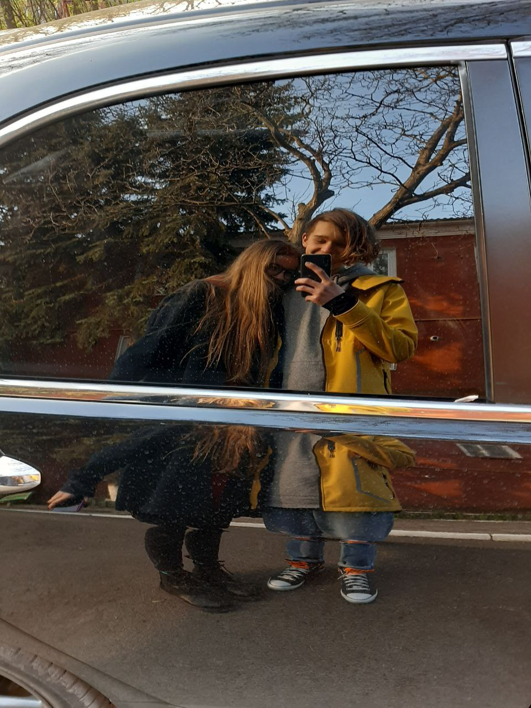
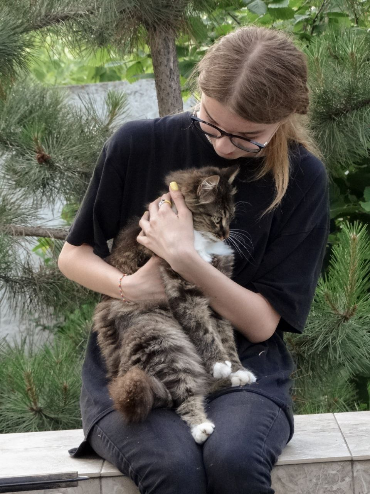
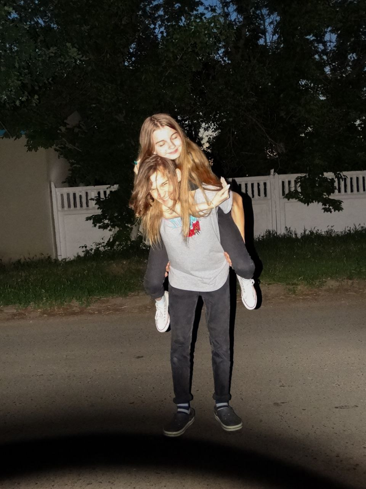
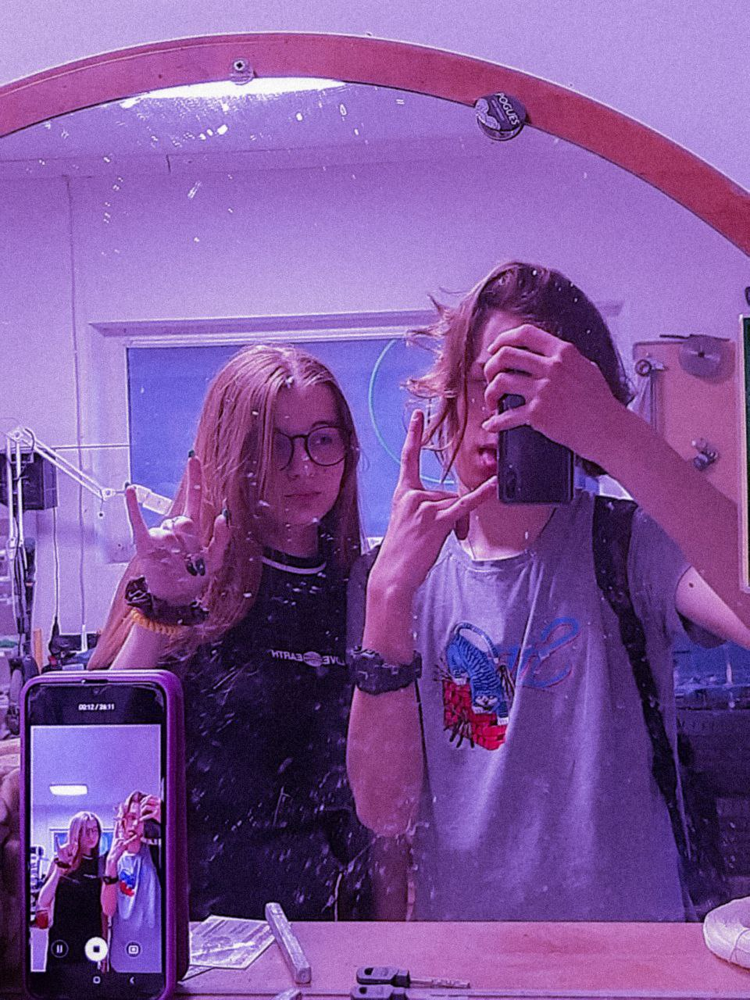
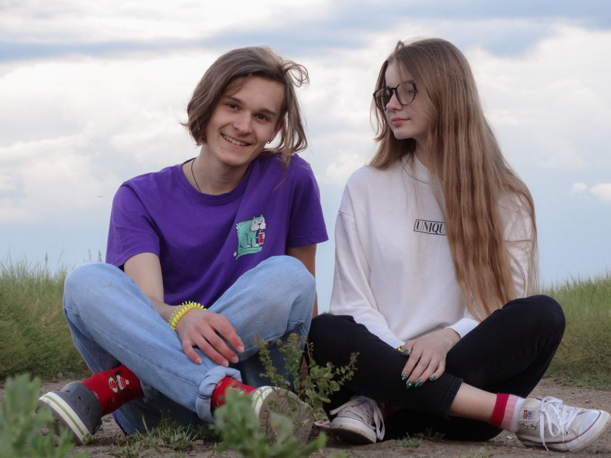
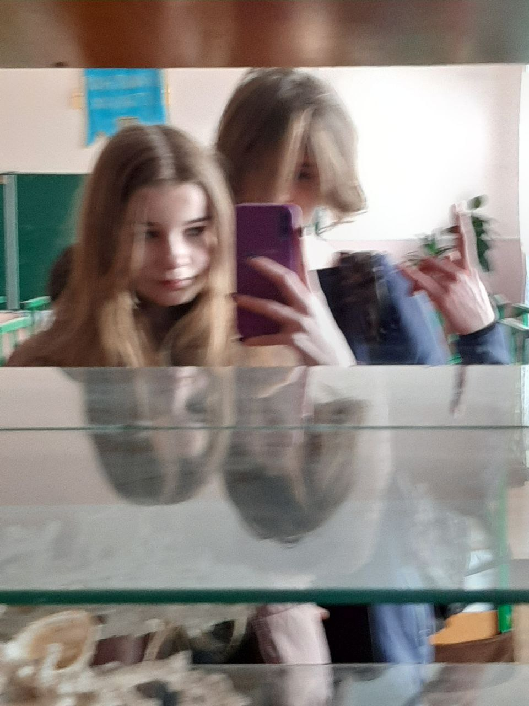
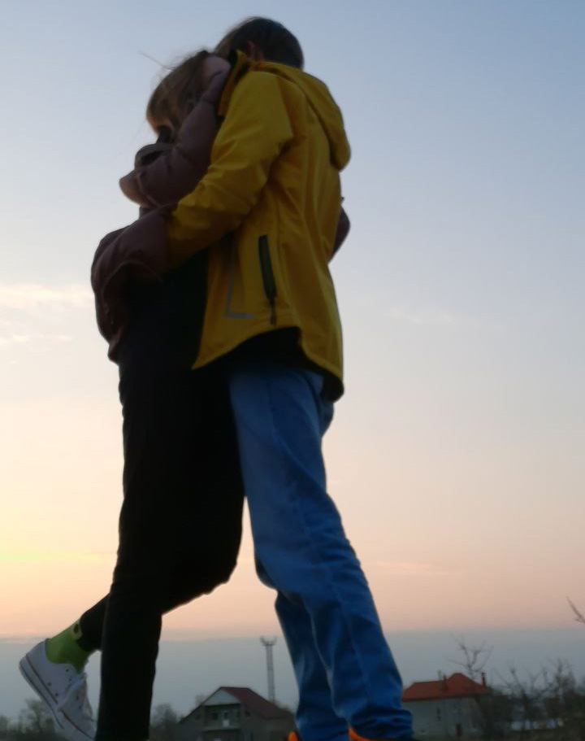

Привет!
Не грусти, давай вспомним все, что было. Просто нажимай на сердечко, чтоб получить случайное воспоминание :)
Не грусти, давай вспомним все, что было. Просто нажимай на сердечко, чтоб получить случайное воспоминание :)

Это мы такие гуляли весело, и фоткались в отражении машины, а потом только увидели внутри человека xD

Фоточка у меня дома, здесь два котика(

Катались, ты устала как всегда - и мы начали фоткаться. Хотели эстетику, а получилось как всегда смешное и милое :3

Залезли в гараж, сломав дверь, потому что никого не было дома, пхпх

Тут мы просто весь вечер фоткались, скучаю по такому :(
п.с. Ты такая красиваяяяяяяяяя!
п.с. Ты такая красиваяяяяяяяяя!
Решили в холодину кататься...Замерзли, и пошли пить чай с мамой, плакаю

Ооо, ходил с тобой сдавать тетрадки, не знаю помнишь ли)

Фото 29 апреля, прям как сегодня, когда я пишу это. До моего др неделя. Закат. Любим(